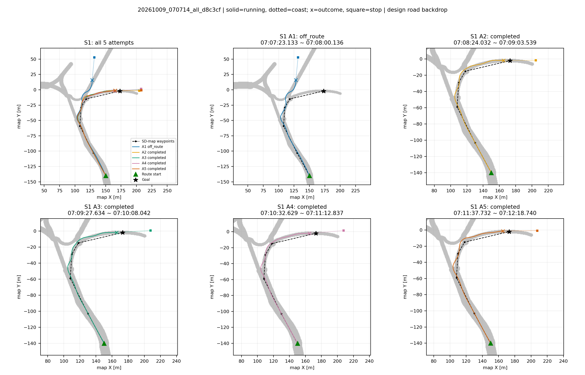
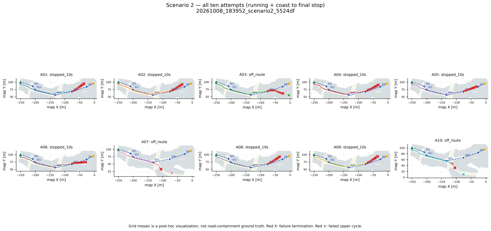
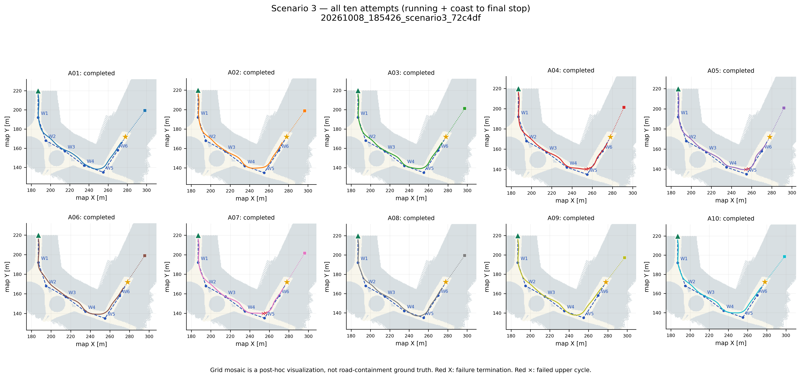
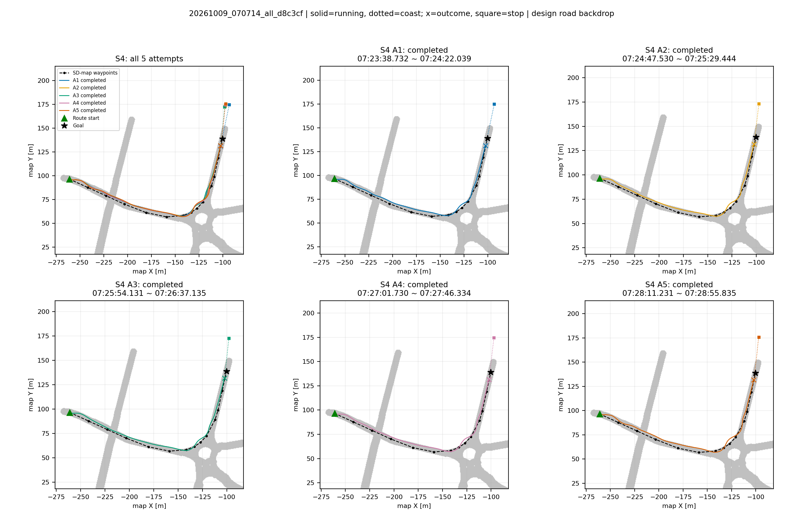
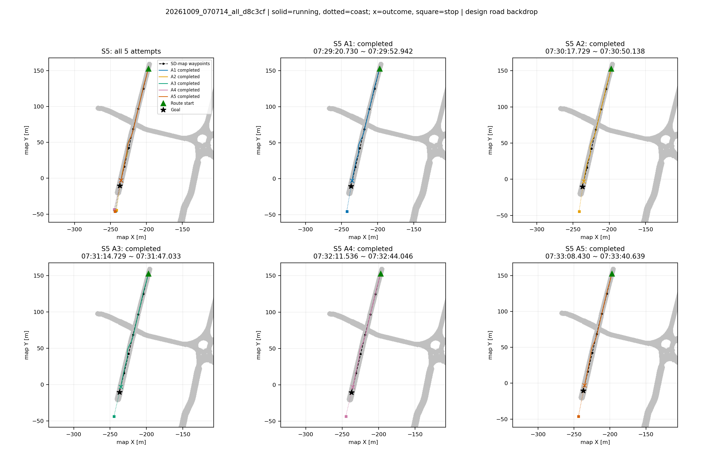
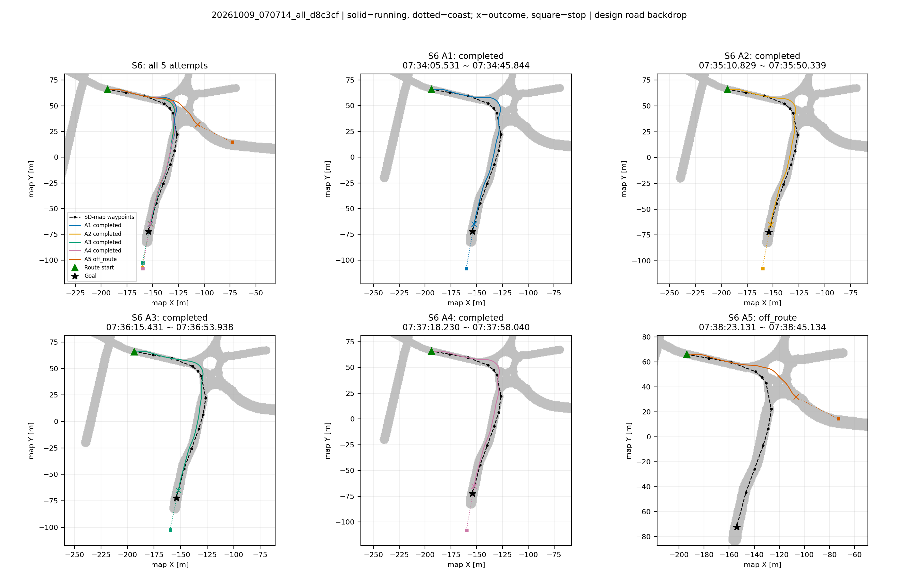
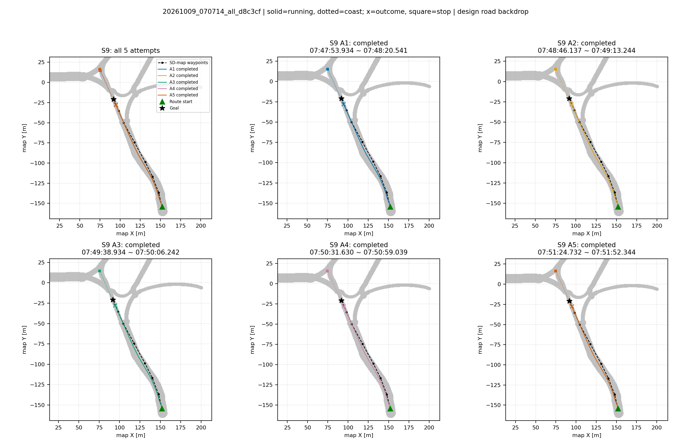

최신 S1·4·5·6·9 / 기존 S2·3. 실패 회차 포함. 전체 성능 통계로 일반화하지 않음.
보고서 | 전 회차 PDF20261009_070714_all_d8c3cf

20261008_183952_scenario2_5524df

20261008_185426_scenario3_72c4df

20261009_070714_all_d8c3cf

20261009_070714_all_d8c3cf

20261009_070714_all_d8c3cf

20261009_070714_all_d8c3cf
